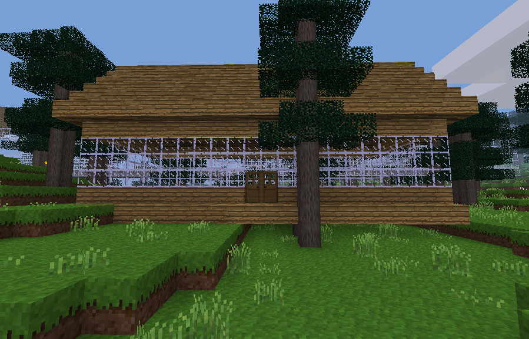

We have all the helper functions to build complex structures quickly saved in the minetest_helper.py module. Now we can start building them. The first structure will be a railway station.
The design of the station will be implemented in a function. The user of this function will be able to change the appearance by setting arguments to the function such as
We make life a bit easier for the user by providing defaults for arguments which are not set explicitly. This means the user only has to provide specifications which are different to the defaults. The only data which needs to be provided is the location of the station. The user needs to pass in a dictionary for the function to store the built node data before it is sent to minetest
Try to follow through the function to see how the different parts of the station are built. There are comments before each section because it is not obvious from reading set_nodes commands what is being achieved at each step.
Once we are finished developing this function we will add it to minetest_helper.py module so it can be called from other functions.
Three level station

One level station
